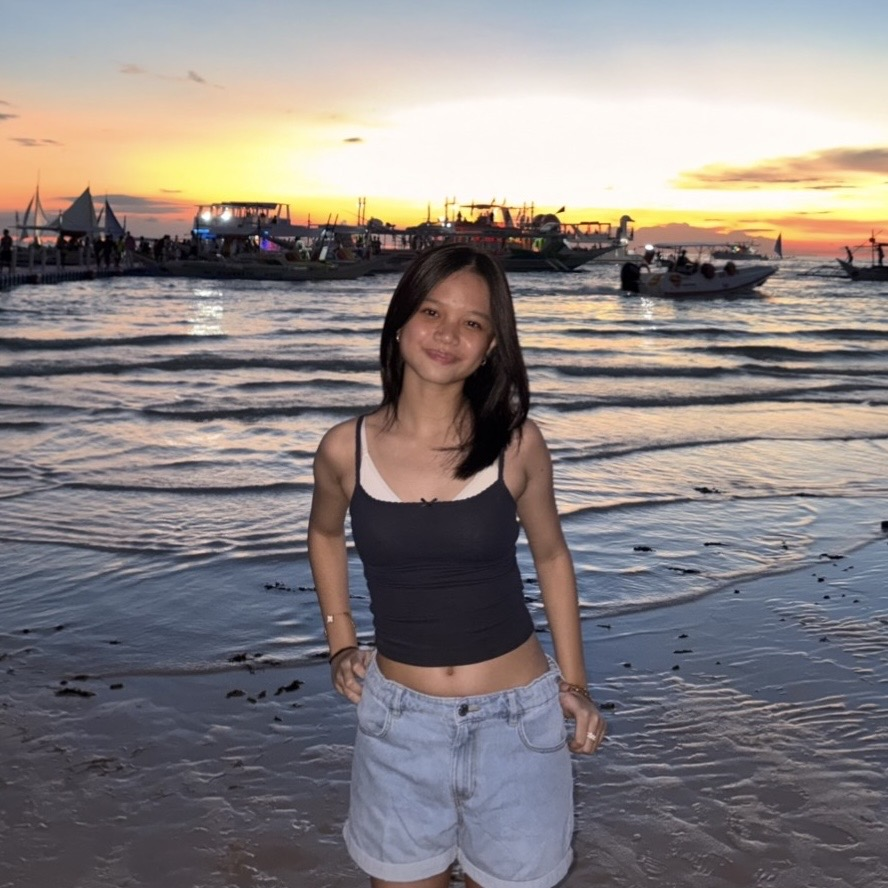
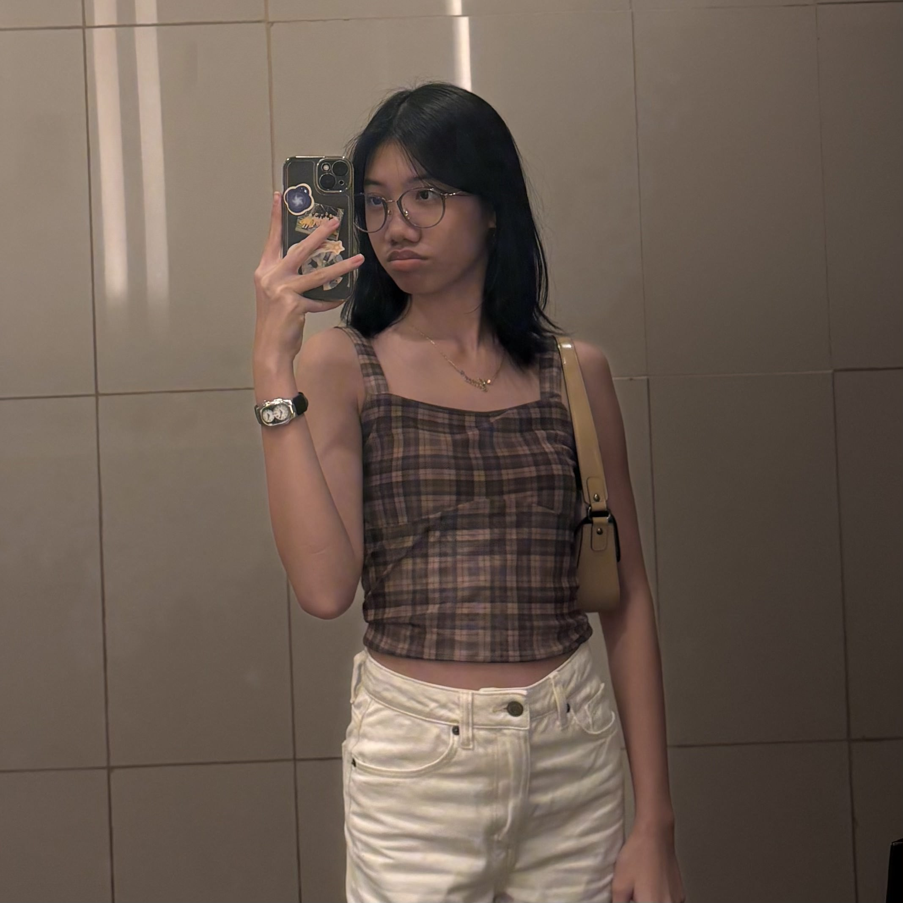

Closet Verse is a website made to unlock the full potential of your wardrobe by helping you decide what to wear. It will help match your top of choice to an ideal pair of bottoms and vice versa, suggest the perfect color combinations, and even help you generate an outfit!
↧↧↧

Heyy!! I'm Zy! What I wear in a day depends on what activities I'm gonna do. On a regular day, I would wear a baby T and sweatpants, paired with my crocs. My favorite color to get for clothes would definitely be blue.

Haiii!! I'm Anica (or Ani)! My clothing style heavily depends on my mood. If I feel lazy, I'll throw on an oversized shirt or one of my go-to crop tops and jeans. I normally wear simple outfits with a shoulder bag and sneakers when I go out. I put on more effort when picking an outfit when we go to an event, say out to a fancy-ish dinner, a gala, or a celebration.